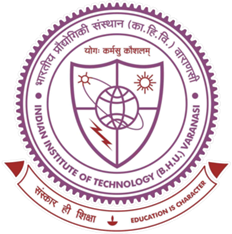
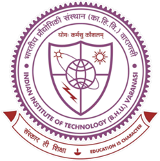

Workshop on Enabling Cyber-Resilient Distribution Systems with Edge-IBR
Date: October 19, 2024
Location:
In-Person: Room 3-370, 33 Massachusetts Ave, MIT (Map)
Online: Zoom Link (TBA)
Overview
Join us for an in-depth workshop on "Enabling Cyber-Resilient Distribution Systems with Edge Inverter-Based Resources (IBR). This event will bring together industry experts, researchers, and practitioners to explore advanced strategies for enhancing the resilience and security of distribution systems incorporating IBR at the edge.
Through a series of focused sessions inspired by an NSF project, participants will gain valuable insights into monitoring, visibility, and data-driven approaches to detecting cyber anomalies and threats, and distributed optimization and control-based mitigation for enabling resilient electric distribution systems.
Workshop Goals
- Understand the Challenges: Explore the unique challenges posed by the integration of Inverter-Based Resources (IBR) and associated cyber systems into distribution systems at the edge.
- Enhance Monitoring and Visibility: Learn about the latest techniques for improving the monitoring and visibility of cyber anomalies/threats and IBR in distribution networks.
- Leverage Data-Driven Techniques: Discover how data-driven approaches and machine learning-assisted distributed optimization and control can be applied to mitigate the impact of cyber threats in electric distribution systems.
- Foster Collaboration: Create opportunities for long-term collaboration and knowledge sharing among participants from different disciplines for advancing the state of the art and broader impacts.
Speakers
TBA
Schedule
Welcome and Background: 9:00 - 9:10 AM
Session 1: 9:10 - 10:40 AM
Topic: Monitoring and Visibility of IBR in Electric Distribution Systems
This session will focus on the system modeling, importance of monitoring and visibility in distribution systems with integrated IBR. Participants will explore the latest advancements in real-time monitoring to ensure the resiliency and security of the grid.
Session 2: 10:50 - 12:20 PM
Topic: Data-Driven/ML for Cyber Anomalies Detection and Classification
In this session, data-driven approaches and machine learning techniques will be discussed for detecting cyber anomalies and threats in distribution systems. The session will also cover classification of data anomalies and events.
Session 3: 1:30 - 3:00 PM
Topic: Distributed Optimization and Control
In this session, data-driven approaches and machine learning-assisted distributed optimization techniques will be discussed for control at the edge and for enabling the resilience of IBR-integrated networks.
Session 4: 3:10 - 4:40 PM
Topic: Data-Driven Mitigation for Cyber-resilient Distribution Systems
In this session, techniques for mitigating the impact of cyber threats will be discussed in distribution systems and to enhance the resilience of IBR-integrated networks.
Closing Remarks: 4:40 - 4:50 PM
Who Should Attend
This workshop is ideal for professionals, researchers, and academics involved in the fields of power systems, cybersecurity, optimization, data science, machine learning, digital automation, and related disciplines. Whether you are looking to deepen your knowledge or collaborate with others in the industry, this workshop offers valuable insights and practical strategies for enabling cyber-resilient distribution systems.
Registration
Stay tuned for registration details and additional information on how to participate in this important event. Don't miss the opportunity to engage with leading experts and advance your understanding of cyber resilience in modern distribution systems.
Contact Us
For more information or inquiries about the workshop, please contact: